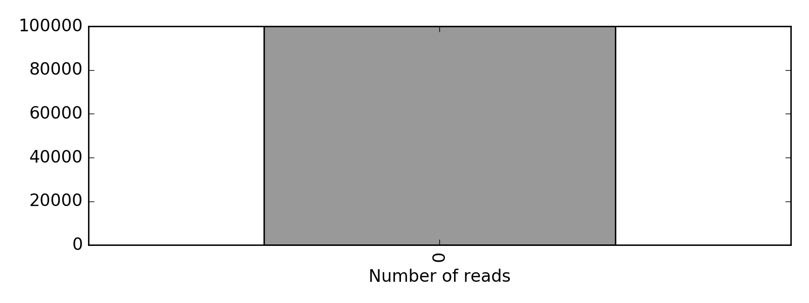
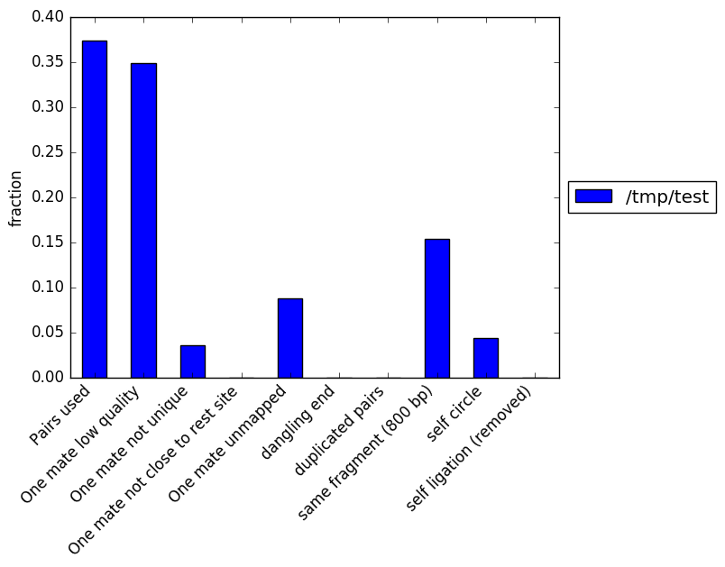
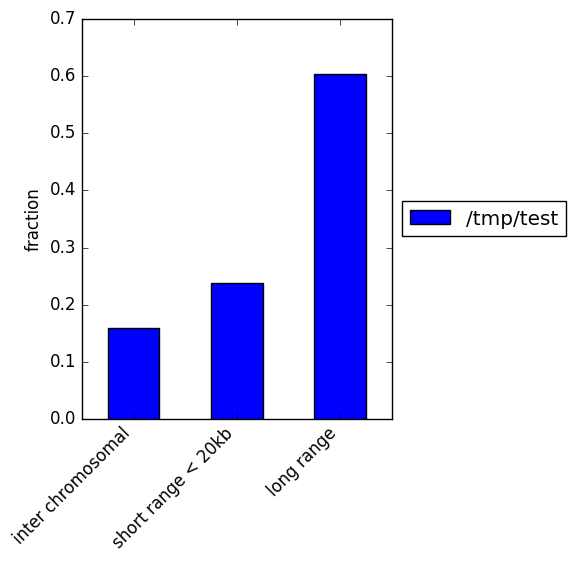
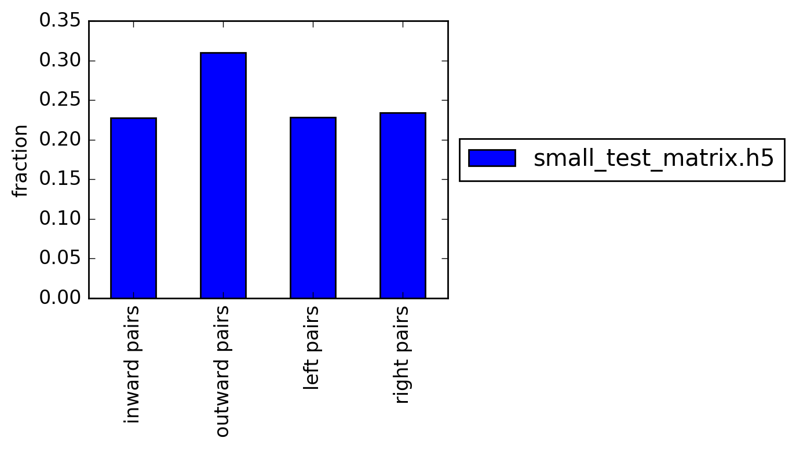

HiCExplorer QC report
Pairs considered
Pairs used & filtered
This figure contains the number of reads that were finally used to build the Hi-C matrix along with the reads that where filtered out.
- Dangling ends
- These are reads that start with the restriction site and constitute reads that were digested but no ligated.
- Same fragment
- These are read mates, facing inward, separated by up to 800 bp that do not have a restriction enzyme in between. These read pairs are not valid Hi-C pairs
- Self circle
- self circles are defined as pairs within 25kb with 'outward' read orientation
- Self ligation
- These are read pairs with a restriction site in between that are within 800 bp.
Contact distance
Read orientation
Number of reads table
| File | small_test_matrix.h5 |
|---|---|
| Max rest. site distance | 800 |
| Min rest. site distance | 300 |
| One mate low quality | 34877 |
| One mate not close to rest site | 0 |
| One mate not unique | 3603 |
| One mate unmapped | 8777 |
| Pairs considered | 99983 |
| Pairs used | 37321 |
| dangling end | 0 |
| duplicated pairs | 12 |
| inter chromosomal | 5955 |
| inward pairs | 7145 |
| left pairs | 7156 |
| long range | 22513 |
| outward pairs | 9731 |
| right pairs | 7334 |
| same fragment (800 bp) | 15393 |
| self circle | 4335 |
| self ligation (removed) | 0 |
| short range < 20kb | 8853 |